⏱️ Statistical models: ACF/PACF, SARIMA#
import datetime
import pandas as pd
import numpy as np
import matplotlib.pyplot as plt
import seaborn as sns
sns.set_theme(style="whitegrid")
from sklearn.metrics import mean_absolute_percentage_error
from sklearn.linear_model import LinearRegression
from sklearn.svm import SVR,LinearSVR
import statsmodels.api as sm
from statsmodels.graphics.tsaplots import plot_acf
from statsmodels.graphics.tsaplots import plot_pacf
from statsmodels.tsa.deterministic import DeterministicProcess
from statsmodels.tsa.seasonal import seasonal_decompose
from statsmodels.tsa.statespace.sarimax import SARIMAX
from statsmodels.tsa.stattools import adfuller
import warnings
warnings.filterwarnings("ignore")
📦 Get data#
We load the Australia electricity dataset, parse the datetime index, and create a short window subset.
A compact window makes patterns easy to see before we scale up.
df = pd.read_excel('data/Australia_electricty_data.xlsx')
df = df.rename(columns={"Unnamed: 0":"datetime", "Electricity [GWh]": "electricity"})
df.set_index('datetime',inplace=True)
print(df.head(5))
#plt.style.use("seaborn-whitegrid")
plt.figure(figsize=(11,5))
p = sns.lineplot(data= df);
p.set_ylabel("Production [GWh]");
p.set_xlabel("Quarters of the year");
plt.legend('', frameon=False);
plt.show()
electricity
datetime
1956-03-01 3923
1956-06-01 4436
1956-09-01 4806
1956-12-01 4418
1957-03-01 4339
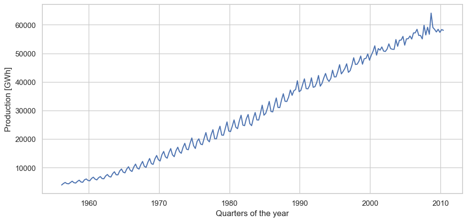
dfs = df.loc['1956-03-01':'1968-12-01']
plt.figure(figsize=(11, 5))
plt.xticks(fontsize=11)
plt.yticks(fontsize=11)
plt.plot(dfs['electricity'])
plt.ylabel('Production [GWh]')
plt.show()
🧪 Stationarity check (ADF)#
🤔 What is “stationary”?#
A time series is stationary if its behavior doesn’t drift over time — the average level and the “wiggliness” (variance) don’t keep changing. Think: no creeping trend, no growing swings.
🧠 What does ADF test do?#
ADF (Augmented Dickey–Fuller) checks if your series acts like a random walk (non-stationary).
Null (H₀): series is non-stationary (has a unit root).
If p-value is small: we reject H₀ → the series looks stationary (under the way you tested it).
🔍 Why do we care?#
Most statistical models (ACF/PACF logic, ARIMA pieces) work best on stationary data. If your series isn’t stationary, you usually difference it (and for quarterly/monthly data, also seasonal-difference).
👣 Quick steps you’ll follow#
Plot your series — do you see a trend/seasonality?
(Optional but common) Difference it:
First difference:
y.diff()Seasonal difference (quarterly):
y.diff(4)Often: seasonal + first:
y.diff(4).diff()
Run ADF on the series you plan to model.
Look at p-value and ADF statistic.
📖 How to read the result#
p < 0.05 → good evidence of stationarity ✅
p ≥ 0.05 → likely non-stationary ❌ (try differencing and test again)
You’ll also see:
ADF statistic (more negative = stronger stationarity signal)
Critical values (1%, 5%, 10%) to compare with the ADF statistic
Lags used (ADF adds past differences so the test behaves well)
✅ Typical outcomes#
After
diff(4).diff(), p gets small → series is ready for ARIMA/SARIMA modeling.If p stays large, consider more careful detrending, transformations (e.g., log), or check for structural breaks.
fuller = adfuller(dfs['electricity'])
print('ADF Statistic: %f' % fuller[0])
print('p-value: %f' % fuller[1])
print('Critical Values:')
for key, value in fuller[4].items():
print('\t%s: %.3f' % (key, value))
ADF Statistic: 2.233387
p-value: 0.998909
Critical Values:
1%: -3.578
5%: -2.925
10%: -2.601
🤔 Interpretation#
The ADF statistic is +2.23 (a positive number), while the critical values are negative (e.g., −2.93 at 5%).
Because +2.23 is nowhere near (i.e., not less than) any critical value, and the p-value ≈ 0.999 is very large, we cannot reject the null hypothesis (H₀: unit root / non-stationary).
Conclusion: the series in its current form is non-stationary ❌.
🧩 Decomposition#
Why decompose?
Split the series into Trend, Seasonal (quarterly, period=4), and Remainder.
Trend: long-run movement
Seasonal: repeated intra-year pattern
Remainder: short-term noise
This guides differencing and seasonal model choices.
decompose = seasonal_decompose(dfs['electricity'],
model='additive', period=4)
plt.figure(figsize=(15,10))
decompose.plot();
plt.show();
<Figure size 1500x1000 with 0 Axes>
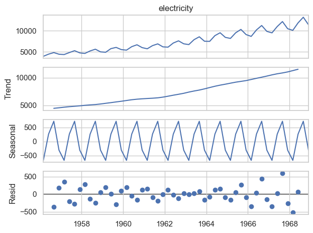
plt.figure(figsize=(11,5))
plt.xticks(fontsize=11)
plt.yticks(fontsize=11)
plt.xlabel('datetime', fontsize=11)
decompose.resid.plot();
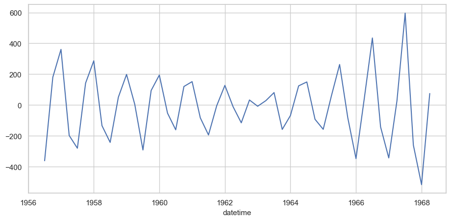
🧩 decompose.resid.plot() — what you’re looking at#
🧠 What are “residuals” here?#
After classical decomposition, your series is split into:
Trend ➕ Seasonal ➕ Remainder (residuals)
decompose.residis that remainder: whatever is left over after removing trend and seasonality.
👀 What should the plot look like?#
No obvious pattern: residuals should “wiggle” around zero with roughly constant spread.
Short bursts are okay, but persistent waves or repeating cycles mean trend/seasonality weren’t fully removed.
Outliers will stick out as tall spikes — flag them.
✅ Good signs#
Residuals look like white noise (no visible structure).
Mean ≈ 0; variance doesn’t grow/shrink over time.
ACF of residuals has no significant lags (optional follow-up check).
⚠️ Red flags#
Leftover seasonality (e.g., repeating pattern every 4 quarters).
Drift or a slow wave → trend not fully captured.
Heteroskedasticity (spread changes over time) — maybe try a log transform before decomposing.
🧪 Stationarity check (ADF)#
fuller = adfuller(decompose.resid.dropna())
print('ADF Statistic: %f' % fuller[0])
print('p-value: %f' % fuller[1])
print('Critical Values:')
for key, value in fuller[4].items():
print('\t%s: %.3f' % (key, value))
ADF Statistic: -11.701448
p-value: 0.000000
Critical Values:
1%: -3.585
5%: -2.928
10%: -2.602
🧪 ADF results — interpretation#
✅ What this means (plain & simple)#
The ADF statistic is −11.70, which is much more negative than all the critical values (−3.59, −2.93, −2.60).
The p-value ≈ 0.000000 is effectively zero.
👉 We reject the null hypothesis of a unit root. The series, as tested, is stationary.
⚙️ Data transformation. Make It Stationary (Diffs, Logs, Seasonality)#
🗓️ Quarterly seasonality#
Your electricity series is quarterly: Mar/Jun/Sep/Dec repeat every year. That means values t and t−4 are in the same quarter a year apart.
🔧 Seasonal differencing (lag = 4)#
diff(4) computes:
[
y_t - y_{t-4}
]
This removes the recurring seasonal level (the “same quarter last year” effect). After this step:
Seasonal pattern is largely canceled out ✅
The series becomes more stationary (flatter mean), making ACF/PACF easier to read ✅
You’re preparing the data for seasonal models (e.g., SARIMA with period 4) ✅
🧹 dropna() cleanup#
The first 4 values can’t compute y_t - y_{t-4}, so they become NaN.
dropna() simply removes those initial missing rows.
📌 When to use it#
For quarterly data with strong yearly seasonality → use
diff(4).For monthly data → you’d typically use
diff(12).Often you’ll then add a first difference too (e.g.,
diff(4).diff()) if a trend is still present.
au_elec_series_short_seas = dfs.diff(4).dropna()
plt.xticks(fontsize=11)
plt.yticks(fontsize=11)
plt.ylabel('Production [GWh]', fontsize=11)
plt.xlabel('datetime', fontsize=11)
au_elec_series_short_seas['electricity'].plot(figsize=(11,5));
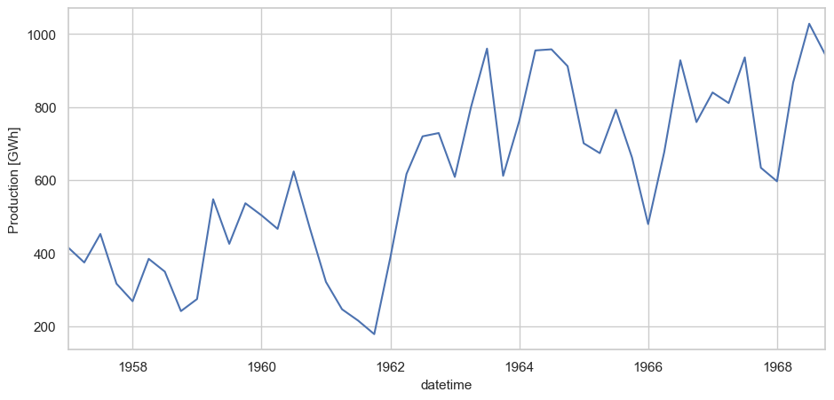
au_elec_series_short_diff = au_elec_series_short_seas.diff().dropna()
plt.xticks(fontsize=11)
plt.yticks(fontsize=11)
plt.ylabel('Production [GWh]', fontsize=11)
plt.xlabel('datetime', fontsize=11)
au_elec_series_short_diff['electricity'].plot(figsize=(11,5));
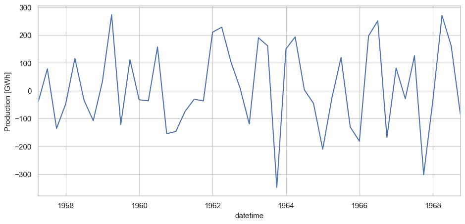
🧪 Stationarity check (ADF)#
✅ Plain takeaway#
The ADF statistic is −7.22, which is far more negative than all critical values (−3.59, −2.93, −2.60).
The p-value ≈ 0 ⇒ very strong evidence against the unit-root (non-stationary) null.
Conclusion: the series (as tested) is stationary.
🧠 Why this matters#
You’ve transformed the data appropriately (e.g., seasonal and/or first differencing).
It’s now suitable for ARMA/SARIMA modeling and for reading ACF/PACF patterns.
🔎 Next steps#
Use ACF/PACF to pick AR/MA orders (seasonal lags at 4, 8, … for quarterly).
Check residuals after fitting (look for white-noise behavior).
Optionally confirm with KPSS (should typically not reject stationarity now).
fuller = adfuller(au_elec_series_short_diff['electricity'])
print('ADF Statistic: %f' % fuller[0])
print('p-value: %f' % fuller[1])
print('Critical Values:')
for key, value in fuller[4].items():
print('\t%s: %.3f' % (key, value))
ADF Statistic: -7.215759
p-value: 0.000000
Critical Values:
1%: -3.585
5%: -2.928
10%: -2.602
🔎 Next steps#
Use ACF/PACF to pick AR/MA orders (seasonal lags at 4, 8, … for quarterly).
Check residuals after fitting (look for white-noise behavior).
Optionally confirm with KPSS (should typically not reject stationarity now).
📈 ACF — Autocorrelation Function#
🤔 What is ACF?#
The Autocorrelation Function (ACF) tells you how strongly a time series is related to its own past values. For each lag k, ACF measures the correlation between (y_t) and (y_{t-k}).
Think: “How similar is the series to itself if I shift it by k steps?”
🧠 Why do we use it?#
Detect persistence: do values depend on recent past?
Spot seasonality: big spikes at seasonal lags (e.g., 4 for quarterly, 12 for monthly).
Model selection (ARMA/SARIMA): read ACF (with PACF) to guess AR and MA orders.
🔍 How to read the ACF plot#
Significant spike at lag 1, then tailing off: short-memory dependence; often suggests MA(1)-like behavior (but confirm with PACF).
Seasonal spikes at (m, 2m, 3m,\dots): seasonality of period (m).
Slow decay (very gradual fall) in the raw series: signals non-stationarity → consider differencing.
The vertical bars show correlation values; the shaded bands are confidence intervals. Bars outside the band ⇒ significant autocorrelation.
🧪 Stationarity tip before ACF#
ACF is most useful on a stationary series. If the raw data has trend/seasonality:
Seasonal difference (e.g.,
diff(4)for quarterly).First difference if trend remains.
Then plot ACF on the differenced series.
🧭 Interpreting common patterns#
Strong lag-1 spike; quick drop: short memory; try small MA(q).
Spikes at lags 4, 8, 12…: quarterly seasonality; include seasonal MA at period (m=4).
Many lags significant: under-differenced or structural patterns still present → revisit transformations.
⚠️ Pitfalls & tips#
Over-differencing can create artificial negative lag-1 autocorrelation.
Outliers can distort correlations — consider robust checks or winsorizing for diagnostics.
Short samples make CIs wide; be cautious with small datasets.
🧩 ACF on raw data#
plt.figure(figsize=(11, 5))
plt.xticks(fontsize=9)
plt.yticks(fontsize=9)
plt.ylabel('Production [GWh]', fontsize=11)
plt.plot(dfs['electricity'], lw=1)
plt.show()
fig = plot_acf(dfs['electricity'])
plt.xticks(fontsize=9)
plt.yticks(fontsize=9)
plt.title ('Autocorrelation', fontsize=11)
fig.set_size_inches((11, 5))
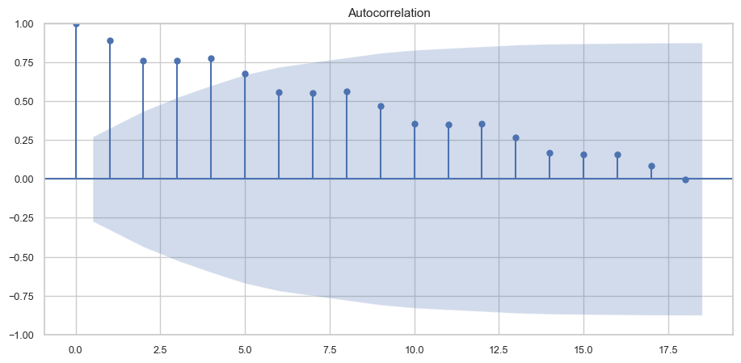
Here’s what that ACF says at a glance:
Strong persistence: Lag-1 is ≈1, and the bars decay slowly over many lags.
Many positive lags are significant: i.e., they stick above the confidence band early on.
No clear seasonal pattern: you don’t see distinct extra-tall spikes at fixed intervals (e.g., 4, 8, 12 for quarterly). It’s mostly a monotone decay.
Interpretation#
This is the classic look of a non-stationary (trending) series—a near-unit-root behavior.
The slow tail suggests the level is drifting; the main issue is trend, not obvious seasonality (from this plot alone).
🧩 ACF on diff data#
plt.xticks(fontsize=11)
plt.yticks(fontsize=11)
plt.ylabel('Production [GWh]', fontsize=11)
plt.xlabel('datetime', fontsize=11)
au_elec_series_short_diff['electricity'].plot(figsize=(11,5));
fig = plot_acf(au_elec_series_short_diff['electricity'])
plt.xticks(fontsize=11)
plt.yticks(fontsize=11)
plt.title ('Autocorrelation', fontsize=11)
fig.set_size_inches((11, 5))
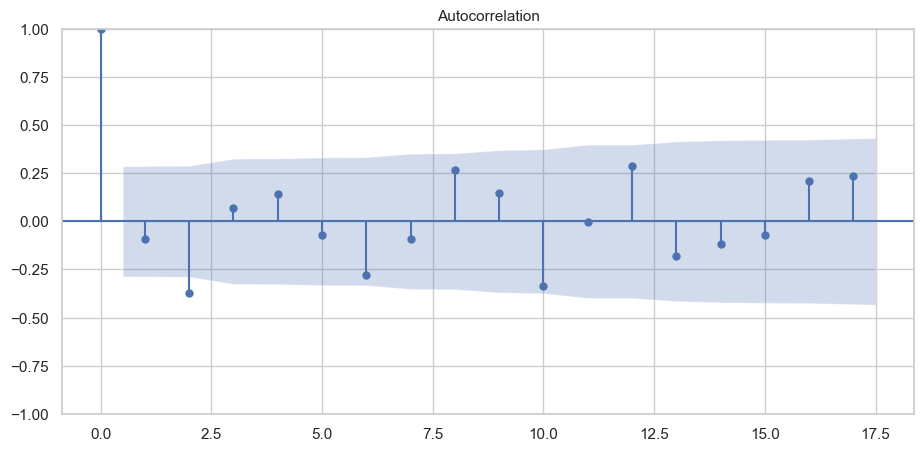
Here’s how I’d read that ACF:
Stationary now: aside from the spike at lag 0 (=1), the rest hover near zero with no slow tail → differencing did its job.
Seasonal fingerprints: clear positive spikes near lags 8, 12, 16 (multiples of 4) ⇒ quarterly seasonality remains in the autocorrelation structure.
📐 PACF — Partial Autocorrelation Function#
🤔 What is PACF?#
The Partial Autocorrelation Function (PACF) measures the link between the series now and k steps back, after removing the effects of all the intermediate lags (1…k−1). Think: “What is the extra information from lag k once the nearer lags are already explained?”
🧠 Why do we use it?#
Choose AR order (p): PACF is the go-to plot for spotting how many autoregressive lags you need.
See seasonal AR: big spikes at seasonal lags (e.g., 4, 8, 12 for quarterly/monthly) hint at seasonal AR terms.
🔍 How to read the PACF plot#
Cut-off pattern: a few early lags are significant, then everything is inside the band → suggests AR(p) with p = number of significant early lags.
Single spike at lag 1 → AR(1)-like behavior.
Spikes at 4, 8, … (for quarterly) → consider seasonal AR(1) with period 4.
If you see a slow tail of many significant lags → likely non-stationary; difference first.
The shaded band is the confidence interval. Bars outside it are “significant.”
🧪 Before you plot PACF#
Make the series stationary (difference, seasonal-difference, maybe log).
PACF on non-stationary data can be misleading.
🧩 PACF vs ACF (cheat sheet)#
PACF helps pick AR(p) (partial correlations “cut off” after p).
ACF helps pick MA(q) (autocorrelations “cut off” after q). Use both to propose (p, q), then confirm with AIC/BIC and residual checks.
🧭 Interpreting common patterns#
PACF: big spike at lag 1 only → try AR(1).
PACF: spikes at 1 & 2 → try AR(2).
PACF: spike at 4 (quarterly) → seasonal AR(1) with m=4.
Many significant lags → recheck stationarity or consider more complex structure.
🧩 ACF vs PACF (quick cheat sheet)#
ACF highlights MA structure (cut-off at q) and seasonal MA (spikes at seasonal lags).
PACF highlights AR structure (cut-off at p) and seasonal AR.
Rule of thumb (not strict):
ACF cuts off at lag q (after difference) ⇒ consider MA(q).
PACF cuts off at lag p ⇒ consider AR(p).
🎯 Takeaway#
Use ACF (with PACF) on a stationary version of your series to:
confirm seasonality and persistence, and
pick reasonable AR/MA orders for (S)ARIMA before fine-tuning with information criteria and residual checks.
🧩 PACF on raw data#
plt.figure(figsize=(11, 5))
plt.xticks(fontsize=11)
plt.yticks(fontsize=11)
plt.ylabel('Production [GWh]', fontsize=11)
plt.plot(dfs['electricity'], lw=1)
plt.show()
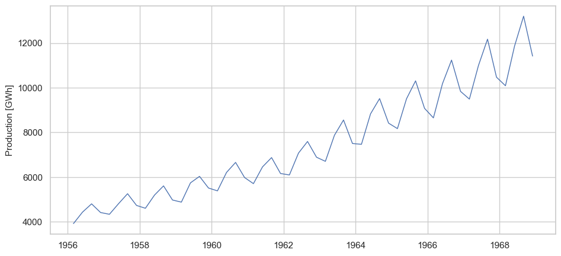
fig = plot_pacf(dfs['electricity'])
plt.xticks(fontsize=11)
plt.yticks(fontsize=11)
plt.title('Partial autocorrelation', fontsize=11)
fig.set_size_inches((11, 5))
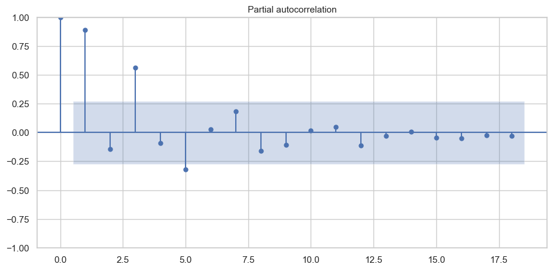
Here’s how I’d read that PACF:
Big spikes at lags 1 and 2 ➜ strong AR(1–2) behavior in the non-seasonal part (the “partial” correlations die off after lag 2).
Clear spike at lag 4 ➜ seasonal AR(1) at the quarterly period (m=4).
Other lags sit inside the band ➜ no strong higher-order AR terms; the series looks stationary (you likely already differenced appropriately).
🧩 PACF on diff data#
plt.xticks(fontsize=11)
plt.yticks(fontsize=11)
plt.xlabel('datetime', fontsize=11)
au_elec_series_short_diff['electricity'].plot(figsize=(11,5));
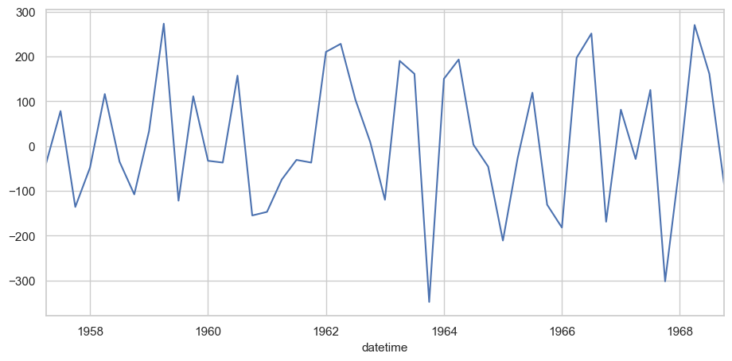
fig = plot_pacf(au_elec_series_short_diff['electricity'])
plt.xticks(fontsize=11)
plt.yticks(fontsize=11)
plt.title('Partial autocorrelation', fontsize=11)
fig.set_size_inches((11, 5))
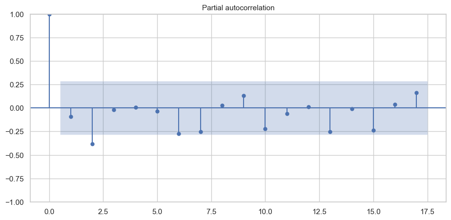
No clear cut-off after a few small lags. Most bars (lags 1–18) sit inside the confidence band.
There’s a modest negative dip around lag 2 and a few tiny bumps later, but nothing strongly significant.
No distinct seasonal AR spike at a fixed seasonal lag (e.g., 4, 8, 12, 16 for quarterly).
📈 AR / ARIMA — intuition + quick practice#
🤔 Big picture#
AR(p) — AutoRegressive: today depends on p past values ( y_t = \phi_1 y_{t-1} + \dots + \phi_p y_{t-p} + \varepsilon_t )
I(d) — Integrated: d differences to remove trend/drift ( \nabla^d y_t ) is the stationary series you actually model
MA(q) — Moving Average: today depends on q past errors ( y_t = \varepsilon_t + \theta_1 \varepsilon_{t-1} + \dots + \theta_q \varepsilon_{t-q} )
Intuition:
AR = “momentum/memory in levels”
I = “stabilize first, then model”
MA = “soak up shock patterns in errors”
https://www.alldatascience.com/time-series/forecasting-time-series-with-arima/
https://analyticsindiamag.com/topics/sarimax-in-python-for-time-series-modeling/
plt.figure(figsize=(11, 5))
plt.xticks(fontsize=11)
plt.yticks(fontsize=11)
plt.plot(dfs['electricity'])
plt.ylabel('Production [GWh]', fontsize=11)
plt.show()
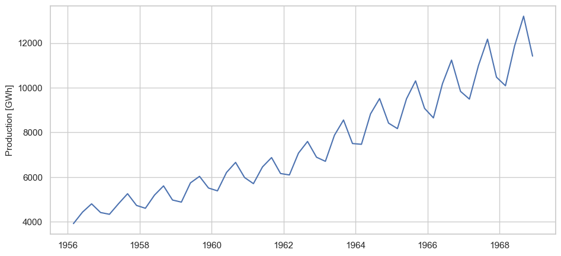
🧪 Stationarity check (ADF)#
fuller = adfuller(dfs['electricity'])
print('ADF Statistic: %f' % fuller[0])
print('p-value: %f' % fuller[1])
print('Critical Values:')
for key, value in fuller[4].items():
print('\t%s: %.3f' % (key, value))
ADF Statistic: 2.233387
p-value: 0.998909
Critical Values:
1%: -3.578
5%: -2.925
10%: -2.601
🧩 Decomposition + model#
Why decompose first?#
Decomposition shows what the model must explain:
Trend ➜ use differencing (I(d)=1 if trend exists).
Seasonality (period = 4) ➜ add seasonal terms (SARIMA with
m=4).Remainder ➜ should look like noise after modeling.
plt.figure(figsize=(11,5))
plt.xticks(fontsize=11)
plt.yticks(fontsize=11)
plt.xlabel('datetime', fontsize=11)
decompose.resid.plot();
Stationarity check (ADF) 🧪#
fuller = adfuller(decompose.resid.dropna())
print('ADF Statistic: %f' % fuller[0])
print('p-value: %f' % fuller[1])
print('Critical Values:')
for key, value in fuller[4].items():
print('\t%s: %.3f' % (key, value))
ADF Statistic: -11.701448
p-value: 0.000000
Critical Values:
1%: -3.585
5%: -2.928
10%: -2.602
res = pd.DataFrame(decompose.resid.dropna())
import pmdarima as pm
auto_arima = pm.auto_arima(res['resid'], stepwise=False, seasonal=False)
auto_arima
ARIMA(5,0,0)(0,0,0)[0]In a Jupyter environment, please rerun this cell to show the HTML representation or trust the notebook.
On GitHub, the HTML representation is unable to render, please try loading this page with nbviewer.org.
ARIMA(5,0,0)(0,0,0)[0]
🧮 ARIMA fit#
from statsmodels.tsa.arima.model import ARIMA
model = ARIMA(res['resid'],order=(5,0,0))
history = model.fit()
res['model'] = history.predict(start=35,end=80,dynamic=True)
res[['resid','model']].plot(figsize=(11,5));
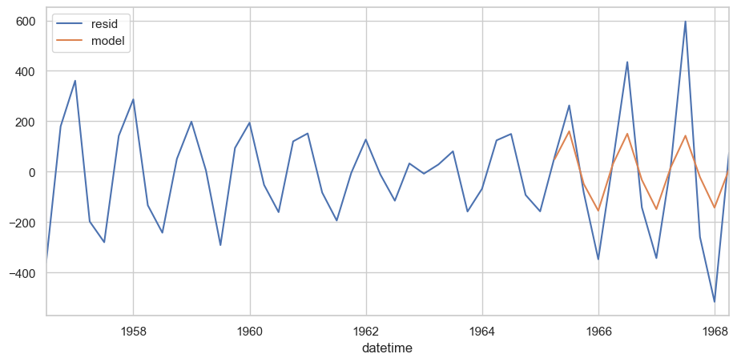
print(history.summary())
SARIMAX Results
==============================================================================
Dep. Variable: resid No. Observations: 48
Model: ARIMA(5, 0, 0) Log Likelihood -272.051
Date: Mon, 27 Oct 2025 AIC 558.101
Time: 13:56:46 BIC 571.200
Sample: 09-01-1956 HQIC 563.051
- 06-01-1968
Covariance Type: opg
==============================================================================
coef std err z P>|z| [0.025 0.975]
------------------------------------------------------------------------------
const -2.4039 2.441 -0.985 0.325 -7.188 2.380
ar.L1 -0.6018 0.154 -3.920 0.000 -0.903 -0.301
ar.L2 -1.1337 0.188 -6.038 0.000 -1.502 -0.766
ar.L3 -0.9362 0.249 -3.762 0.000 -1.424 -0.448
ar.L4 -0.1636 0.192 -0.854 0.393 -0.539 0.212
ar.L5 -0.3173 0.184 -1.726 0.084 -0.678 0.043
sigma2 4196.9549 1125.022 3.731 0.000 1991.952 6401.958
===================================================================================
Ljung-Box (L1) (Q): 0.00 Jarque-Bera (JB): 0.96
Prob(Q): 0.98 Prob(JB): 0.62
Heteroskedasticity (H): 2.82 Skew: 0.33
Prob(H) (two-sided): 0.05 Kurtosis: 2.78
===================================================================================
Warnings:
[1] Covariance matrix calculated using the outer product of gradients (complex-step).
plt.figure(figsize=(11,5))
plt.plot(dfs['electricity'], label="original")
plt.plot(res['model'] + decompose.trend + decompose.seasonal, label="restored")
plt.ylabel('[GWh]')
plt.legend(loc="upper left")
plt.show()
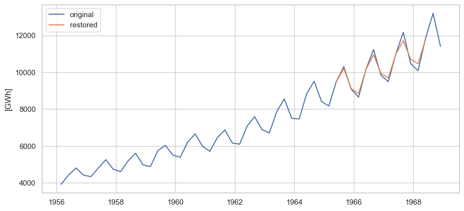
🧩 Transformation + model#
plt.xticks(fontsize=11)
plt.yticks(fontsize=11)
plt.ylabel('Production [GWh]', fontsize=11)
plt.xlabel('datetime', fontsize=11)
au_elec_series_short_diff['electricity'].plot(figsize=(11,5));
🧪Stationarity check (ADF)#
fuller = adfuller(au_elec_series_short_diff['electricity'])
print('ADF Statistic: %f' % fuller[0])
print('p-value: %f' % fuller[1])
print('Critical Values:')
for key, value in fuller[4].items():
print('\t%s: %.3f' % (key, value))
ADF Statistic: -7.215759
p-value: 0.000000
Critical Values:
1%: -3.585
5%: -2.928
10%: -2.602
🔍 ACF#
acf_plot = plot_acf(au_elec_series_short_diff['electricity'])
acf_plot.set_size_inches((11, 5))
# MA =2
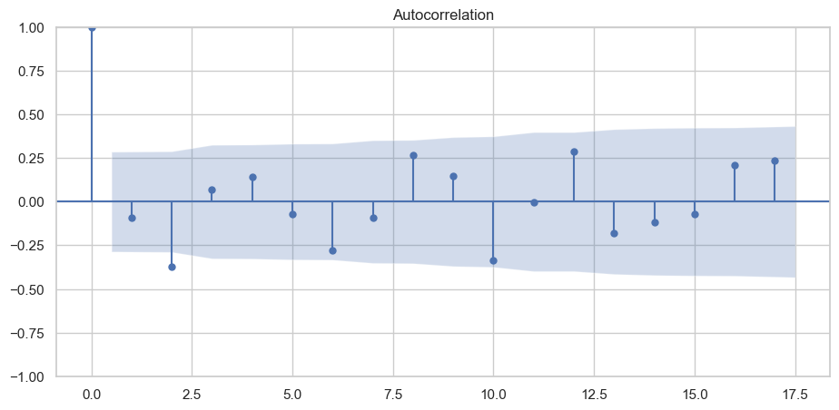
🔍 PACF#
pacf_plot = plot_pacf(au_elec_series_short_diff['electricity'])
pacf_plot.set_size_inches((11, 5))
# AR = 2
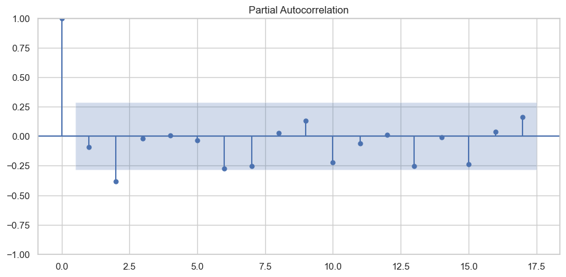
train_end = datetime.datetime(1968,3,1)
test_start = datetime.datetime(1968,6,1)
test_end = datetime.datetime(1968,12,1)
train_data = au_elec_series_short_diff[:train_end]
test_data = au_elec_series_short_diff[test_start:test_end]
import pmdarima as pm
auto_arima = pm.auto_arima(train_data, stepwise=False, seasonal=False)
auto_arima
ARIMA(2,0,2)(0,0,0)[0]In a Jupyter environment, please rerun this cell to show the HTML representation or trust the notebook.
On GitHub, the HTML representation is unable to render, please try loading this page with nbviewer.org.
ARIMA(2,0,2)(0,0,0)[0]
🧮 ARIMA fit#
from statsmodels.tsa.arima.model import ARIMA
# define the model
model = ARIMA(train_data, order=(2,0,2))
# fit the model
model_fit = model.fit()
# summary of the model
print(model_fit.summary())
SARIMAX Results
==============================================================================
Dep. Variable: electricity No. Observations: 44
Model: ARIMA(2, 0, 2) Log Likelihood -277.270
Date: Mon, 27 Oct 2025 AIC 566.539
Time: 13:59:39 BIC 577.244
Sample: 06-01-1957 HQIC 570.509
- 03-01-1968
Covariance Type: opg
==============================================================================
coef std err z P>|z| [0.025 0.975]
------------------------------------------------------------------------------
const 4.6923 18.744 0.250 0.802 -32.044 41.429
ar.L1 0.0975 0.217 0.449 0.653 -0.328 0.523
ar.L2 -0.9488 0.144 -6.567 0.000 -1.232 -0.666
ma.L1 -0.2016 0.333 -0.606 0.544 -0.853 0.450
ma.L2 0.8692 0.273 3.189 0.001 0.335 1.404
sigma2 1.791e+04 6557.285 2.732 0.006 5060.488 3.08e+04
===================================================================================
Ljung-Box (L1) (Q): 0.23 Jarque-Bera (JB): 1.23
Prob(Q): 0.63 Prob(JB): 0.54
Heteroskedasticity (H): 1.39 Skew: -0.04
Prob(H) (two-sided): 0.53 Kurtosis: 2.18
===================================================================================
Warnings:
[1] Covariance matrix calculated using the outer product of gradients (complex-step).
# get prediction start and end dates: training data
pred_start_date = train_data.index[0]
pred_end_date = train_data.index[-1]
validations = model_fit.predict(start=pred_start_date, end=pred_end_date)
plt.figure(figsize=(11,5))
plt.plot(train_data, label="train data")
plt.plot(validations, label="model output")
plt.ylabel('[GWh]')
plt.legend(loc="upper left")
plt.show()
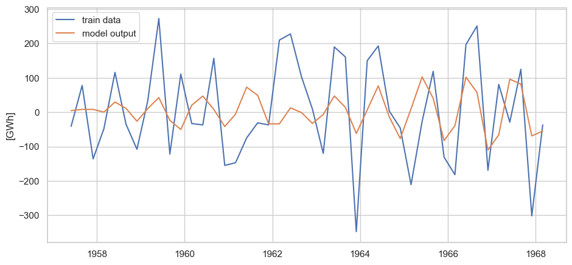
Residuals#
fig_res = plt.figure(figsize=(11,5))
residuals = model_fit.resid[1:]
plt.plot(residuals)
plt.axhline(0, color='r', linestyle='--', alpha=0.2)
plt.title('Residuals')
plt.ylabel('Error')
plt.show()
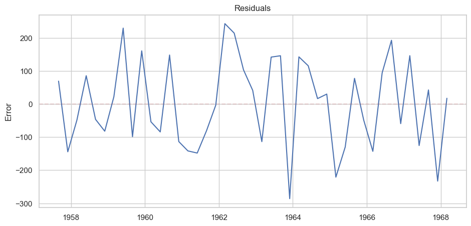
fig_dens_res = plt.figure(figsize=(8,5))
residuals.plot(title='Density', kind='kde')
plt.show()
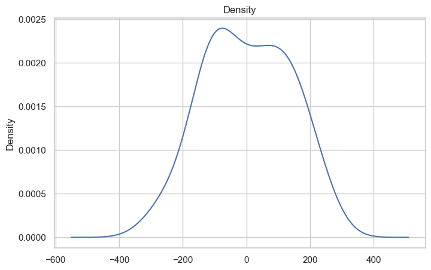
ACF (residuals)#
fig_acf_resid = plot_acf(residuals)
fig_acf_resid.set_size_inches((11, 5))
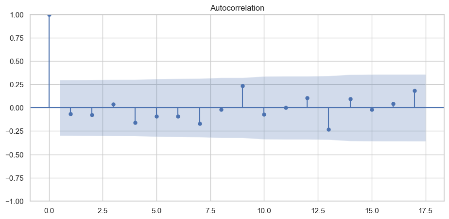
PACF (residuals)#
fig_pacf_resid = plot_pacf(residuals)
fig_pacf_resid.set_size_inches((11, 5))
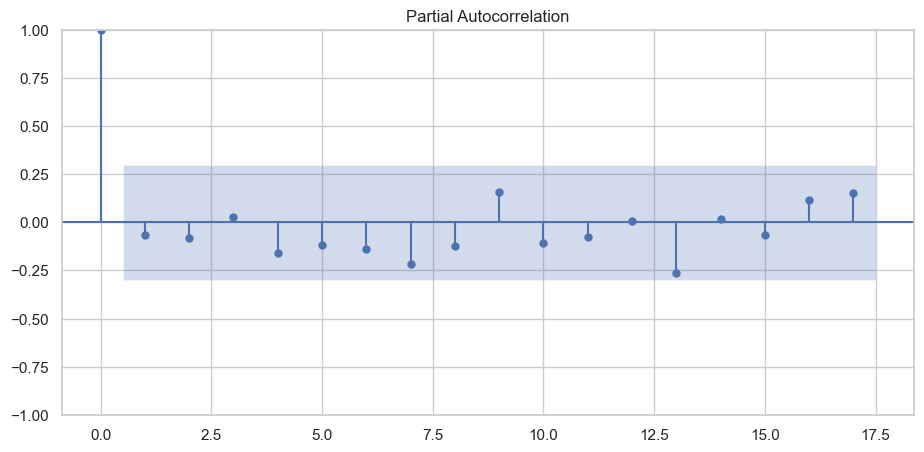
🔢 Restore#
CUMSUM — cumulative sum (tutorial style)#
What it is:
CUMSUM (a.k.a. cumsum) is the running total of a series.
For values \((x_1, x_2, \dots, x_t)\), the cumulative sum is
\(\text{cumsum}_t=\sum_{i=1}^{t} x_i\)
a = np.array([10, 11, 12, 13, 14, 15])
np.cumsum(a)
array([10, 21, 33, 46, 60, 75])
def integrate(values):
x = np.cumsum(values)
return x
def differentiate(values):
x = np.concatenate([[values[0]], values[1:]-values[:-1]])
return x
dd = differentiate(a)
dd
array([10, 1, 1, 1, 1, 1])
i = integrate(dd)
i
array([10, 11, 12, 13, 14, 15])
Restore data#
validations_df = pd.DataFrame(data=validations)
validations_df_rnm = validations_df.rename(columns={"predicted_mean": "electricity"})
valid_mrg = pd.concat([au_elec_series_short_seas.iloc[[0]],
validations_df_rnm], ignore_index = False)
valid_mrg_cums = valid_mrg.cumsum()
valid_mrg_cums_mrg = pd.concat([dfs.iloc[0:4],
valid_mrg_cums], ignore_index = False)
dfQ1sl = valid_mrg_cums_mrg[::4]
dfQ2sl = valid_mrg_cums_mrg[1::4]
dfQ3sl = valid_mrg_cums_mrg[2::4]
dfQ4sl = valid_mrg_cums_mrg[3::4]
dfQ1slCUM = dfQ1sl.cumsum()
dfQ2slCUM = dfQ2sl.cumsum()
dfQ3slCUM = dfQ3sl.cumsum()
dfQ4slCUM = dfQ4sl.cumsum()
dfCUMf = pd.concat([dfQ1slCUM, dfQ2slCUM, dfQ3slCUM, dfQ4slCUM], ignore_index = False)
dfCUMfsorted = dfCUMf.sort_index()
audropped = dfs.drop(index=['1968-06-01','1968-09-01','1968-12-01'])
plt.figure(figsize=(11,5))
plt.plot(audropped, label="original")
plt.plot(dfCUMfsorted, label="restored")
plt.ylabel('[GWh]')
plt.legend(loc="upper left")
plt.show()
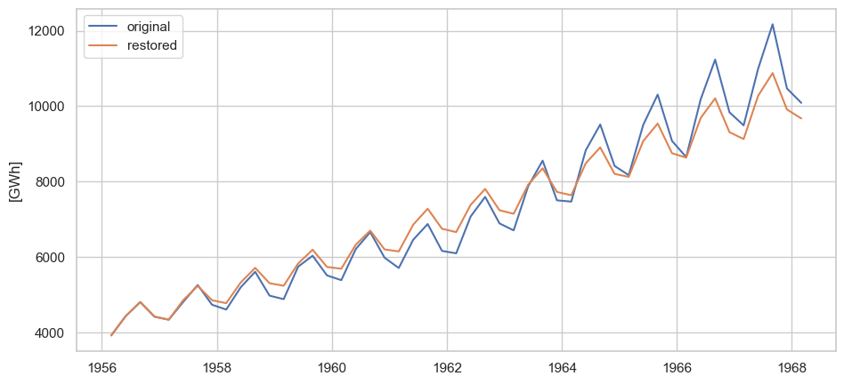
📅 Seasonal ARIMA (SARIMA)#
Goal: model time series with trend + seasonality using SARIMA. When to use: quarterly, monthly, weekly data with repeating patterns (e.g., electricity demand, sales).
🧩 What is SARIMA?#
SARIMA adds seasonal AR/MA and seasonal differencing to ARIMA.
Notation: \(\text{SARIMA}(p,d,q),(P,D,Q)_m\)
Non-seasonal: (p)=AR lags, (d)=differences, (q)=MA lags
Seasonal: (P)=seasonal AR lags, (D)=seasonal differences, (Q)=seasonal MA lags
m = seasonal period (e.g., 4 = quarters, 12 = months)
Intuition:
I(d) removes trend
I_m(D) removes seasonal mean shifts
AR / MA terms capture short-memory patterns in the differenced data
Seasonal AR / MA terms capture lag-m relationships (same season last cycle)
model = sm.tsa.statespace.SARIMAX(dfs['electricity'],order=(2, 1, 2),seasonal_order=(1,1,1,4))
results = model.fit()
RUNNING THE L-BFGS-B CODE
* * *
Machine precision = 2.220D-16
N = 7 M = 10
At X0 0 variables are exactly at the bounds
At iterate 0 f= 6.18954D+00 |proj g|= 9.46568D-01
At iterate 5 f= 5.73021D+00 |proj g|= 2.59464D-02
At iterate 10 f= 5.72525D+00 |proj g|= 5.39365D-02
At iterate 15 f= 5.71142D+00 |proj g|= 2.25968D-02
At iterate 20 f= 5.69735D+00 |proj g|= 2.05842D-02
At iterate 25 f= 5.68512D+00 |proj g|= 1.91411D-03
At iterate 30 f= 5.67350D+00 |proj g|= 1.52528D-02
At iterate 35 f= 5.66956D+00 |proj g|= 2.65689D-03
At iterate 40 f= 5.66938D+00 |proj g|= 4.39695D-04
At iterate 45 f= 5.66403D+00 |proj g|= 2.51109D-02
At iterate 50 f= 5.65896D+00 |proj g|= 1.87874D-03
* * *
Tit = total number of iterations
Tnf = total number of function evaluations
Tnint = total number of segments explored during Cauchy searches
Skip = number of BFGS updates skipped
Nact = number of active bounds at final generalized Cauchy point
Projg = norm of the final projected gradient
F = final function value
* * *
N Tit Tnf Tnint Skip Nact Projg F
7 50 66 1 0 0 1.879D-03 5.659D+00
F = 5.6589568265349417
STOP: TOTAL NO. of ITERATIONS REACHED LIMIT
This problem is unconstrained.
dfs['model'] = results.predict(start=35,end=60,dynamic=True)
dfs[['electricity','model']].plot(figsize=(11,5));
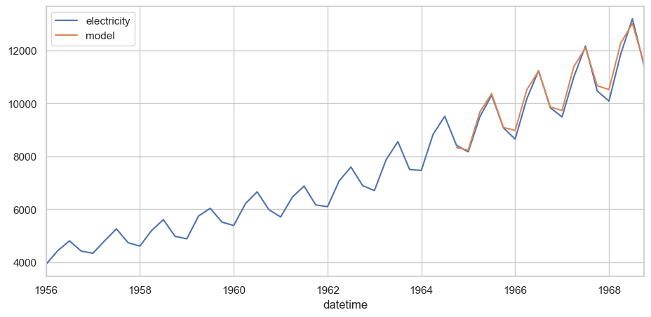